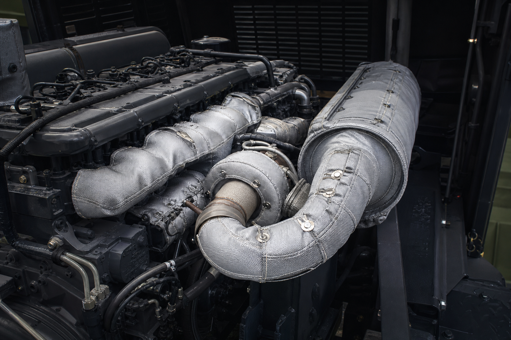
01ARAÇ ISI YÖNETİMİ
Araç ısı izolasyon ceketleri
Motor, turbo, egzoz hattı ve susturucu sistemlerine özel sökülebilir ceketler.
2026 Dijital Ürün Kataloğu
Yüksek sıcaklık, akustik koruma ve enerji verimliliği ihtiyaçları için ölçüye ve uygulamaya özel tekstil katmanlı kompozit ürünler.
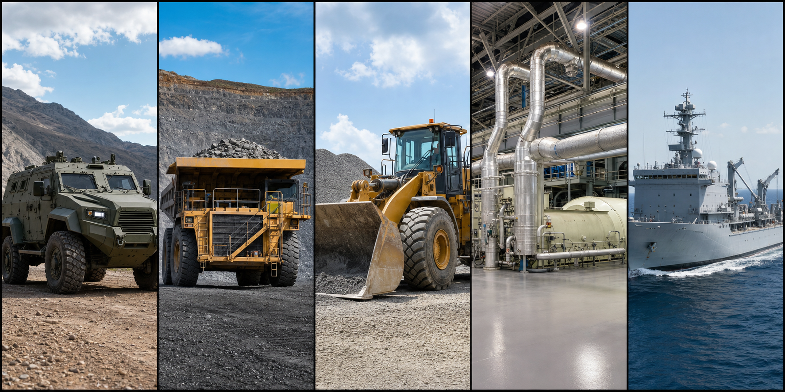
SAVTEX HAKKINDA
SAVTEX; askerî ve ticari araçlardan iş makineleri ile maden araçlarına, enerji tesislerinden endüstriyel proses hatlarına kadar geniş bir uygulama alanı için özel izolasyon çözümleri geliştirir.
Her ürün; geometri, çalışma sıcaklığı, ortam koşulları ve bakım ihtiyacı birlikte değerlendirilerek tasarlanır.
Çalışma sürecimizi inceleyinÜRÜN GRUPLARI
Aradığınız ürünü yazın veya kullanım alanına göre filtreleyin.
8 ürün grubu gösteriliyor

01ARAÇ ISI YÖNETİMİ
Motor, turbo, egzoz hattı ve susturucu sistemlerine özel sökülebilir ceketler.
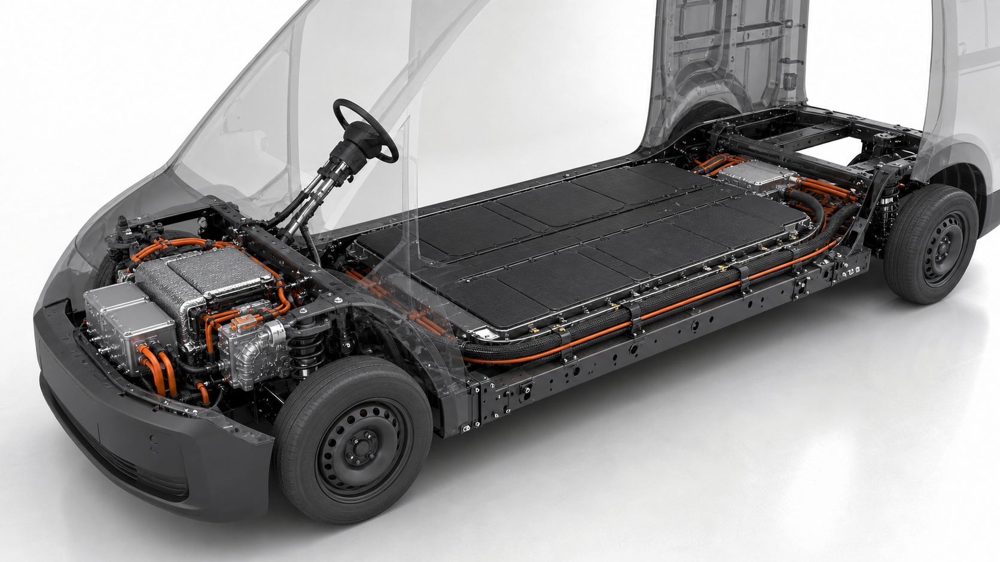
02ELEKTRİKLİ ARAÇLAR
Batarya modülleri, kablolar ve elektronik bileşenler için termal bariyerler.
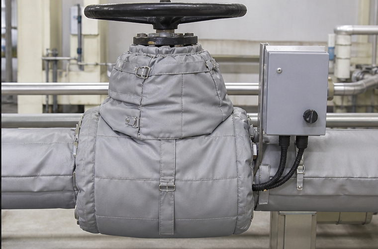
03ENDÜSTRİYEL İZOLASYON
Vana, flanş, eşanjör ve proses ekipmanlarına uygun özel ölçülü ürünler.
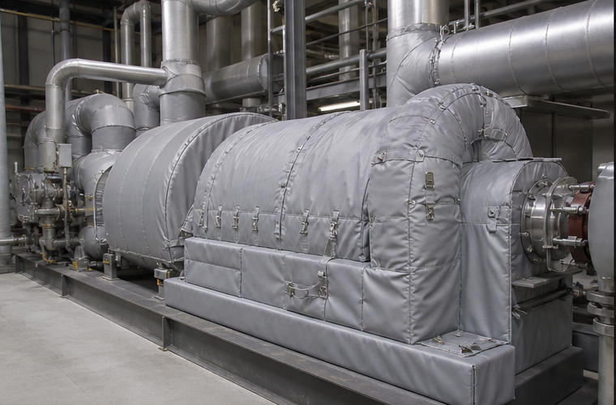
04ENERJİ TESİSLERİ
Türbin ve bağlantılı sıcak yüzeyler için bakım erişimini koruyan katmanlı çözümler.
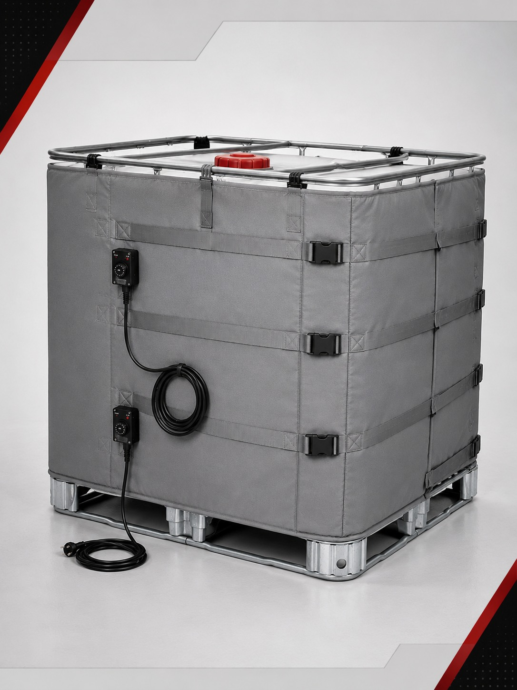
05TANK VE PROSES
IBC tank, varil ve kimyasal proses ekipmanları için izolasyon ve ısıtma ceketleri.
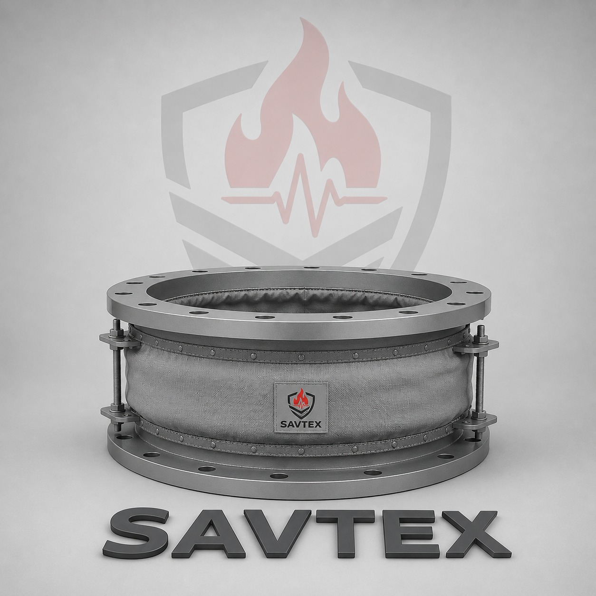
06GENLEŞME ELEMANLARI
Isı, basınç ve kimyasal koşullara göre seçilen kumaş katmanlı elemanlar.
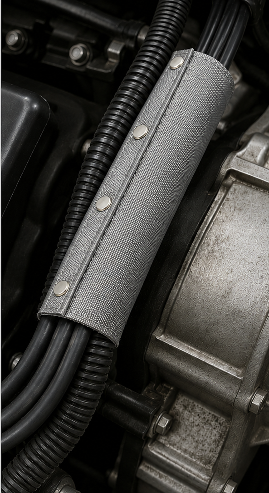
07KABLO KORUMA
Kablo demetleri için esnek, hızlı monte edilebilen ve sökülebilir koruyucu kılıflar.
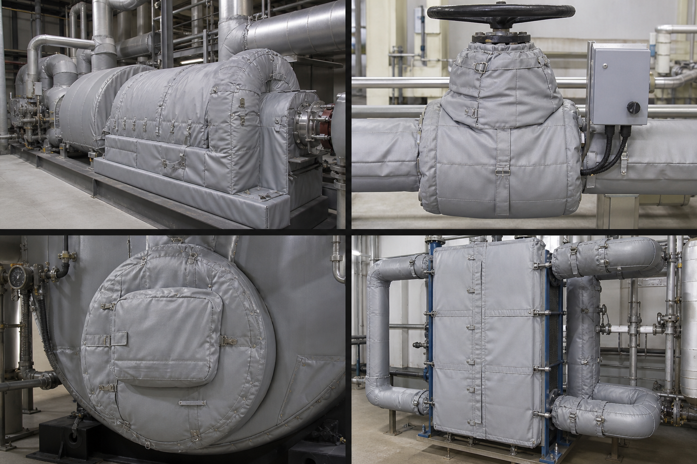
08ÖZEL MÜHENDİSLİK
Geometriye ve çalışma şartlarına göre geliştirilen teknik tekstil çözümleri.
Farklı bir kelime deneyin veya “Tümü” filtresine dönün.
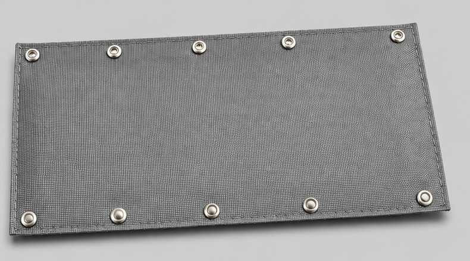
ÖNE ÇIKAN ÇÖZÜM
Motor ve egzoz bölgelerindeki kablo demetlerini ısı, aşınma, sıvı ve dış etkenlere karşı korumaya yardımcı olur. Dar montaj alanlarına uyum sağlayan yapısı bakım sırasında hızlı erişim sunar.
Uygun malzeme ve katman seçimiyle 1000°C’ye kadar seçenekler.
Çıtçıtlı tasarım sayesinde kablolara kolay servis erişimi.
Çap, uzunluk ve branşman noktalarına göre tasarım.
Azami sıcaklık dayanımı; seçilen kumaş, katman yapısı, maruz kalma süresi ve uygulama koşullarına göre doğrulanır.
UYGULAMA ALANLARI
Tek bir standart ürün yerine, her platformun gerçek koşullarına göre seçilmiş malzeme ve katman yapısı.
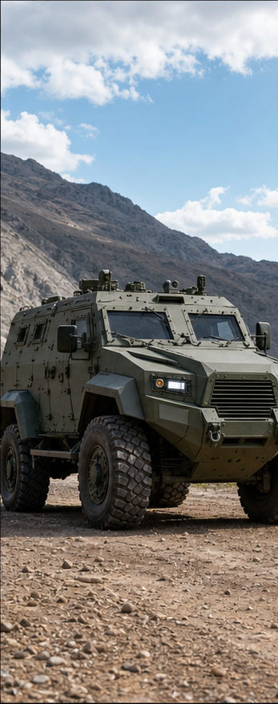
Askerî ve zırhlı araç platformları
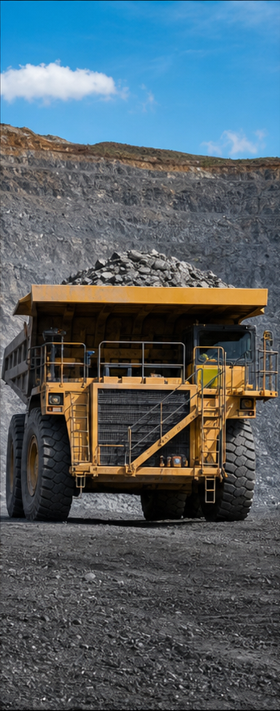
Ağır hizmet ve maden araçları
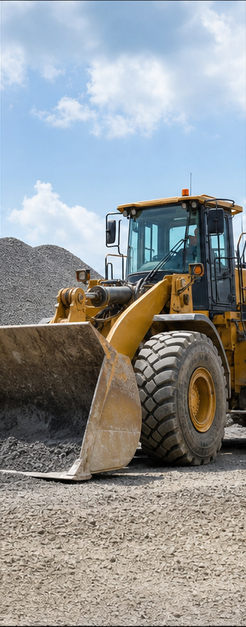
Motor ve egzoz ısı yönetimi
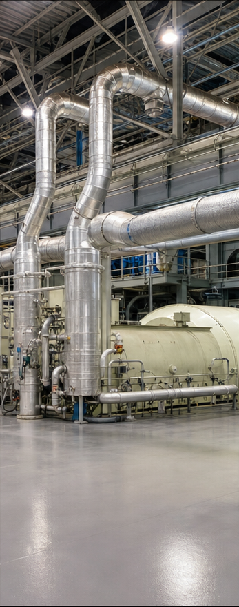
Türbin ve sıcak proses yüzeyleri
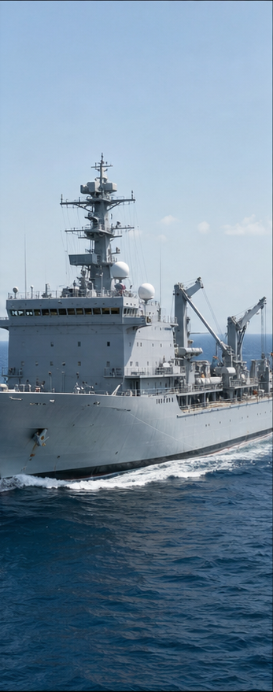
Gemi ve özel mobil sistemler
MÜHENDİSLİK VE ÜRETİM
Teknik veriden saha montajına kadar her adım, ürünü gerçek çalışma koşullarına yaklaştırır.
Ölçü, fotoğraf, geometri ve çalışma koşullarının değerlendirilmesi.
CAD destekli ürün tasarımı ve teknik onay süreci.
Sıcaklık, basınç ve çevresel etkilere uygun katman yapısı.
ERP üzerinden iş emri, üretim aşaması ve kalite kaydı takibi.
Saha uygulaması, devreye alma ve teslimat sonrası teknik destek.
Müşteriden alınan ölçü, fotoğraf ve teknik verilerle saha dışında tasarım hazırlanabilir.
Planlama, iş emirleri, üretim aşamaları ve kalite kayıtları izlenebilir şekilde yönetilir.
Malzeme seçimi, ara kontroller ve son ürün değerlendirmeleriyle uygunluk izlenir.
KALİTE GÜVENCESİ
Uygunsuzlukların kök nedenini belirlemek, tekrarını önlemek ve üretim süreçlerini geliştirmek için sistematik kalite araçlarından yararlanıyoruz.
Belge kapsamları ve güncel sertifika bilgileri talep hâlinde paylaşılır. ISO 31000, risk yönetiminde uygulama rehberi olarak ele alınır.
PROJENİZİ KONUŞALIM
Uygulamanızın ölçülerini, çalışma koşullarını ve teknik beklentilerini paylaşın; ihtiyaca özel çözüm geliştirelim.